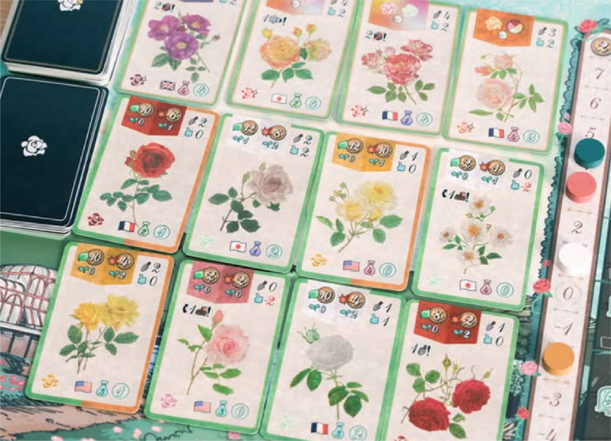
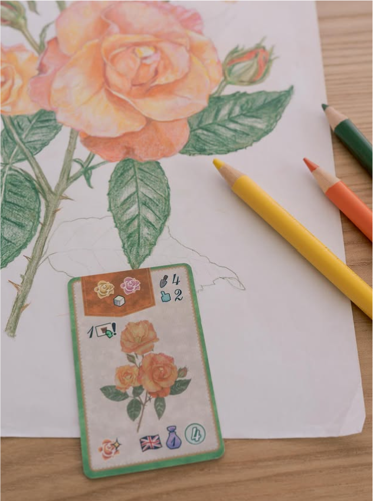
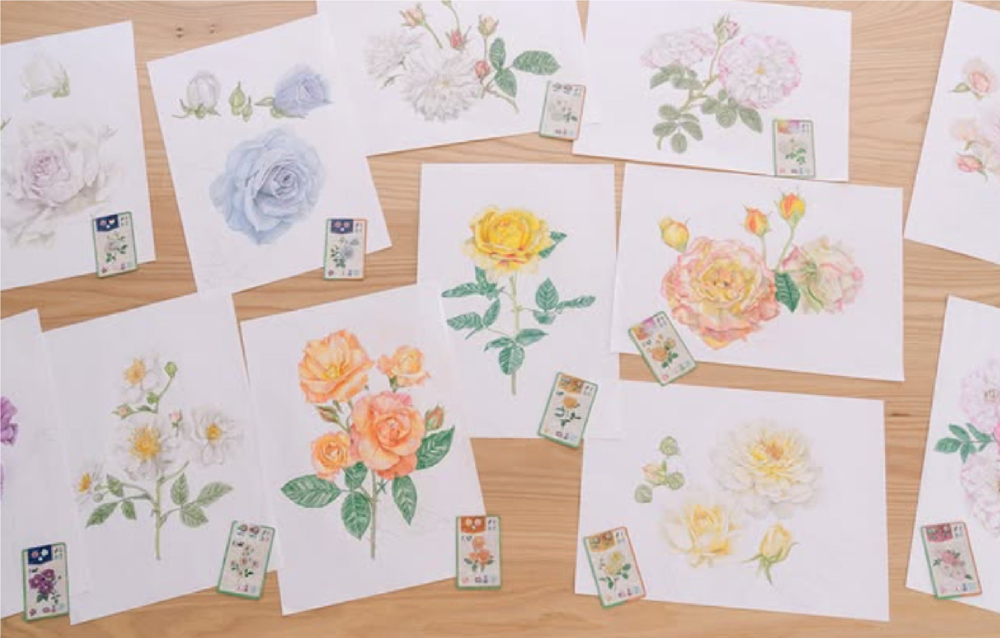
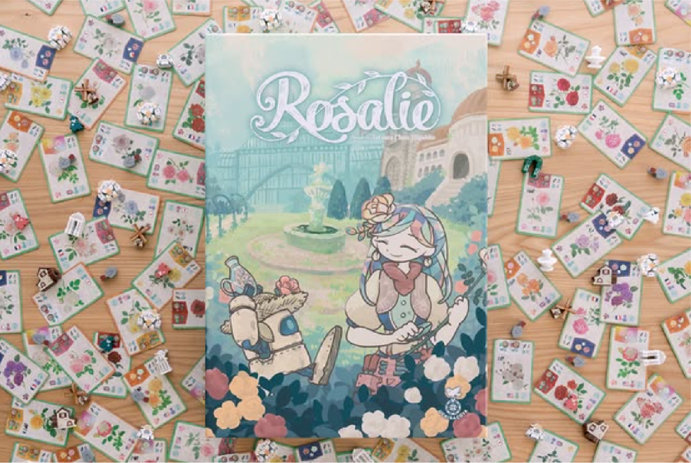
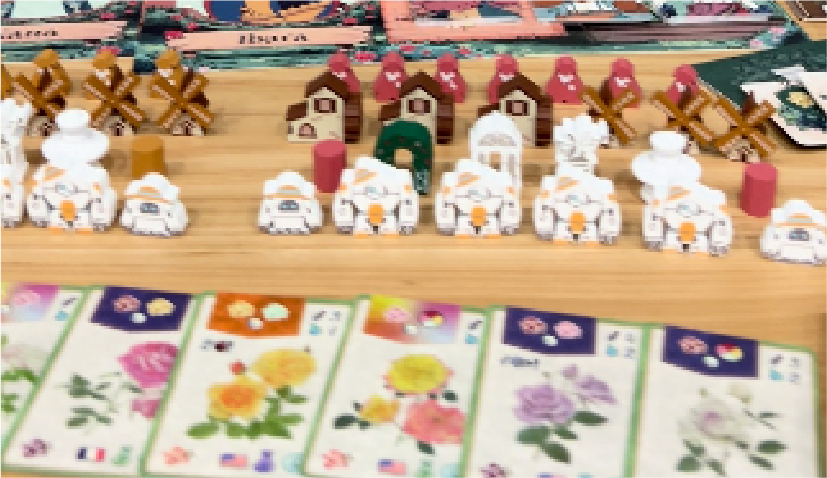
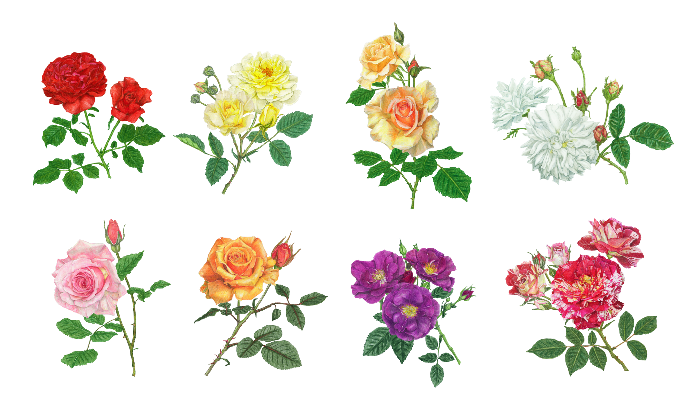

← BACK TO WORKS
ボードゲーム「Rosalie」
ILLUSTRATION
ボタニカルアート

バラを育成するボードゲーム用のイラストを制作しました。
ゲーム性に関わるため、実在する50種類のバラを特徴が伝わるよう描き分けています。色鉛筆による手描きで制作し、花と葉を別々に描きPhotoshopで合成することで細部まで表現しました。





- Project
- ボードゲーム「Rosalie」
- Category
- 手書きイラスト
- 制作
- 2025年12月